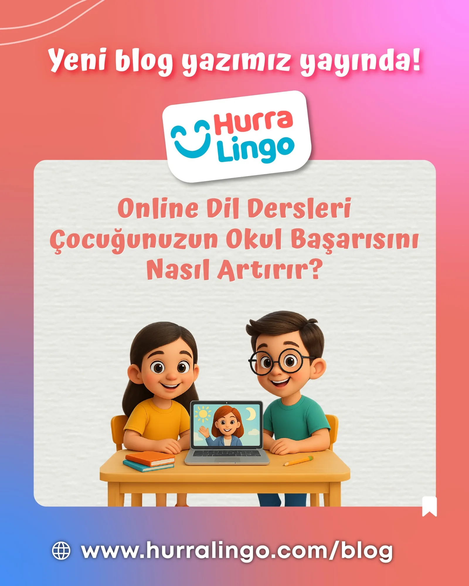

Online Dil Dersleri Çocuğunuzun Okul Başarısını Nasıl Artırır?

Online Dil Dersleri Çocuğunuzun Okul Başarısını Nasıl Artırır?
Ebeveynler için en önemli önceliklerden biri, çocuklarının eğitim hayatında başarılı olmasıdır. Özellikle ilkokul ve ortaokul döneminde kazanılan beceriler, gelecekteki akademik yolculuğu doğrudan etkiler. Günümüzde online dil dersleri, yalnızca yabancı dil öğrenmek için değil, aynı zamanda okul başarısını artırmak için de güçlü bir araç haline gelmiştir.
Peki online dil eğitimi çocukların okul hayatına hangi alanlarda katkı sağlar? Gelin birlikte inceleyelim.
Online Dil Dersleri Akademik Başarıyı Güçlendirir
Araştırmalar, ikinci bir dil öğrenen çocukların dikkat, hafıza ve problem çözme becerilerinde belirgin gelişmeler yaşadığını gösteriyor. Online dil dersleri, çocuklara düzenli tekrar ve interaktif öğrenme imkânı sunarak bu becerilerin gelişmesine destek olur.
Örneğin; yabancı dil öğrenirken kullanılan gramer kuralları, çocuğun analitik düşünme yeteneğini artırır. Kelime ezberleme çalışmaları ise hafızayı güçlendirir. Bu beceriler matematik, fen ve sosyal bilimler gibi diğer derslerde de başarıyı doğrudan etkiler.
Yabancı Dil Öğrenmenin Özgüvene Etkisi
Çocukların okul başarısında özgüven kritik bir faktördür. Online dil dersleri, birebir konuşma fırsatı sunduğu için öğrencilerin iletişim becerilerini geliştirir. Yabancı öğretmenlerle ya da farklı kültürlerden akranlarla iletişim kuran çocuk, sınıfta da kendini daha rahat ifade eder.
Bu özgüven, yalnızca dil derslerinde değil, tüm okul hayatına yansır. Sunum yaparken daha cesur, grup çalışmalarında daha aktif ve öğretmenlerle iletişimde daha kendinden emin hale gelirler.
Online Eğitimde Zaman ve Mekân Avantajı
Klasik kurslara gitmek çoğu zaman ekstra zaman ve enerji gerektirir. Ancak online dil eğitimi, esnek yapısıyla çocuğun okul programına kolayca uyum sağlar. Evden bağlanarak ders alabilmek, hem ulaşım masraflarını ortadan kaldırır hem de çocuğun daha dinç bir şekilde derse katılmasını sağlar.
Bu sayede çocuklar hem okul derslerine gereken zamanı ayırır hem de yabancı dil eğitiminden geri kalmaz. Özellikle sınav dönemlerinde online derslerin esnekliği büyük avantaj yaratır.
Online Dil Dersleri Kültürel Zenginlik Kazandırır
Yabancı dil öğrenmek sadece kelime bilgisi değildir; aynı zamanda kültürel farkındalık kazandırır. Online derslerde kullanılan hikâyeler, videolar ve farklı ülkelerden öğretmenlerle yapılan konuşmalar, çocukların dünyaya daha geniş bir perspektiften bakmasına yardımcı olur.
Kültürel çeşitlilik, çocukların okul projelerinde yaratıcı fikirler geliştirmesine, sosyal etkinliklerde öne çıkmasına ve farklı bakış açılarını anlamasına katkı sağlar.
Teknoloji ile Desteklenen Öğrenme Deneyimi
Online dil dersleri, klasik yöntemlerden farklı olarak oyunlaştırılmış içerikler, interaktif uygulamalar ve yapay zekâ destekli egzersizler sunar. Bu teknolojik imkânlar sayesinde çocuklar sıkılmadan öğrenir, düzenli pratik yapar ve öğrendiklerini hızlı bir şekilde pekiştirir.
Ayrıca mobil uygulamalar aracılığıyla ders tekrarları yapılabilir, kelime kartları kullanılabilir ve ebeveynler çocuğun gelişimini kolayca takip edebilir.
Online Dil Dersleri ile Geleceğe Güçlü Bir Adım
Özetlemek gerekirse, online dil dersleri çocukların okul başarısını artırır, özgüven kazandırır ve onları geleceğe hazırlar. Akademik gelişimin yanı sıra kültürel farkındalık, zaman yönetimi ve iletişim becerileri de desteklenir.
Eğer siz de çocuğunuzun hem derslerinde başarılı olmasını hem de erken yaşta yabancı dil öğrenerek geleceğe hazırlanmasını istiyorsanız, online dil eğitimini güçlü bir seçenek olarak değerlendirebilirsiniz.